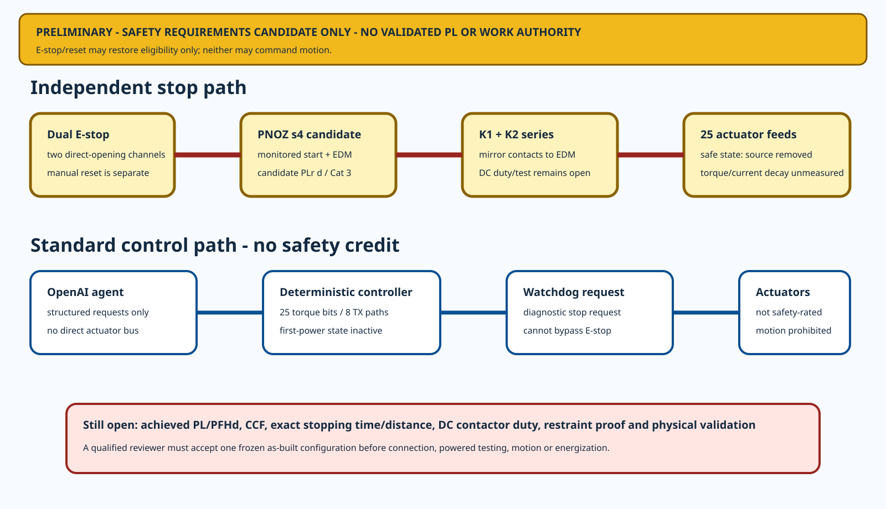

24
whole-robot hazards; none accepted
Project Button · HR-30 whole-body P0.1
The existing stop hardware, no-motion firmware, restraint boundary and first-power ladder now have one traceable candidate SRS. Every achieved-performance and physical-result field is still open.
whole-robot hazards; none accepted
safety/control function records
stopping-time intervals to measure
achieved PL claims or executed validations

| ID | Function | Candidate PLr | Implementation | Achieved PL |
|---|---|---|---|---|
| SFR-01 | Emergency-stop demand removes actuator energy | d | IMPLEMENTED AS UNVALIDATED TOPOLOGY | NO |
| SFR-02 | Prevention of unexpected restart | d | IMPLEMENTED AS UNVALIDATED TOPOLOGY | NO |
| SFR-03 | External-device monitoring | d | IMPLEMENTED AS UNVALIDATED TOPOLOGY | NO |
| SFR-04 | Control-power loss enters safe state | d | PARTIAL - HARDWARE/HIL NOT EXECUTED | NO |
| SFR-05 | Actuator VDD backfeed prevention | d | DEFINED - UNBUILT | NO |
| SFR-06 | Branch overcurrent interruption | N/A | NOT IMPLEMENTED | NO |
| SFR-07 | Watchdog loss requests safe stop | NOT ALLOCATED | DEFINED - NO SAFETY CREDIT | NO |
| SFR-08 | Torque-disable command | NOT ALLOCATED | COMPILED - UNFLASHED | NO |
| SFR-09 | Charger interlock | c | FUTURE - OUT OF SCOPE | NO |
| SFR-10 | Fall restraint prevents head/floor contact | N/A | NOT SELECTED OR PROVED | NO |
| SFR-11 | Safety-related speed/travel limiting | d | NOT IMPLEMENTED - MOTION PROHIBITED | NO |
| SFR-12 | Power-loss collapse containment | d | NOT IMPLEMENTED - MOTION PROHIBITED | NO |
T_total = t_input + t_logic + t_output + t_contactor + t_bus + t_torque + t_mechanical
No numerical stopping limit or distance is released. Every interval, joint velocity, gravity/fall contribution and uncertainty must be measured before any motion stage.
| Term | Interval | Allocation | Result |
|---|---|---|---|
| t_input | hazard/E-stop actuation to valid safety-input state | SELECTION REQUIRED | NONE |
| t_logic | safety relay input recognition to output release | SELECTION REQUIRED | NONE |
| t_output | safety output release to K1/K2 coil decay | SELECTION REQUIRED | NONE |
| t_contactor | coil decay to both main contacts confirmed open | SELECTION REQUIRED | NONE |
| t_bus | main contact opening to actuator rail below selected safe-voltage threshold | SELECTION REQUIRED | NONE |
| t_torque | rail/torque-off demand to actuator current below selected residual-torque threshold | SELECTION REQUIRED | NONE |
| t_mechanical | torque removal to end of coast/overtravel/restraint motion | SELECTION REQUIRED | NONE |
| T_total | t_input + t_logic + t_output + t_contactor + t_bus + t_torque + t_mechanical | SELECTION REQUIRED | NONE |
qualified ISO 12100 risk assessment not accepted
OPENcandidate PLr allocations are project-owned and unapproved
OPENachieved PL/PFHd not calculated
OPENcommon-cause measures unverified
OPENstopping-time intervals and total are unmeasured
OPENjoint and endpoint stopping distances are unallocated
OPENPNOZ/contactors and DC opening duty are unvalidated as a system
OPENwhole-body fall restraint has no rated design or proof
OPENsafety-related speed/travel monitoring is absent
OPENpublic and child interaction safety is outside P0.1
OPENelectrical protection and protective bonding remain open
OPENno physical safety test or qualified validation has executed
OPENSRS · hazards · functions · PL inputs · CCF · zero-motion invariants · timing · 25 axes · validation · holds · sources
External standards are referenced by official publication pages and access date. Their copyrighted full text is not reproduced.